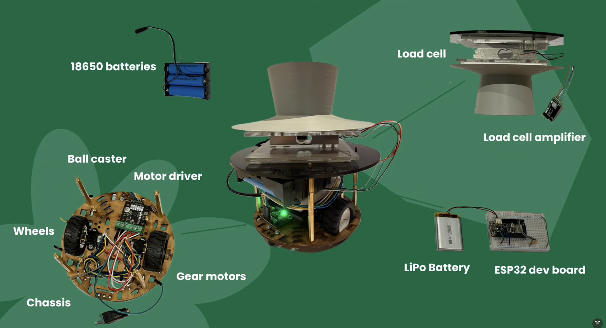
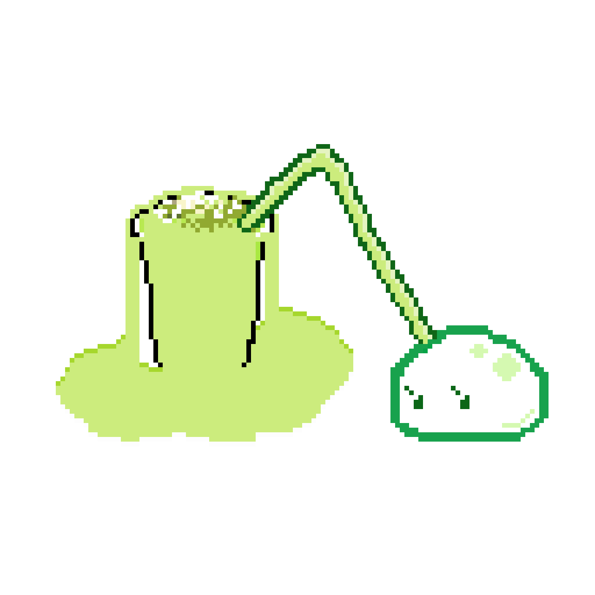
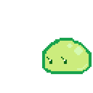
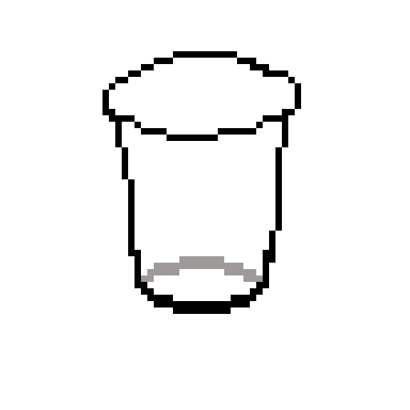
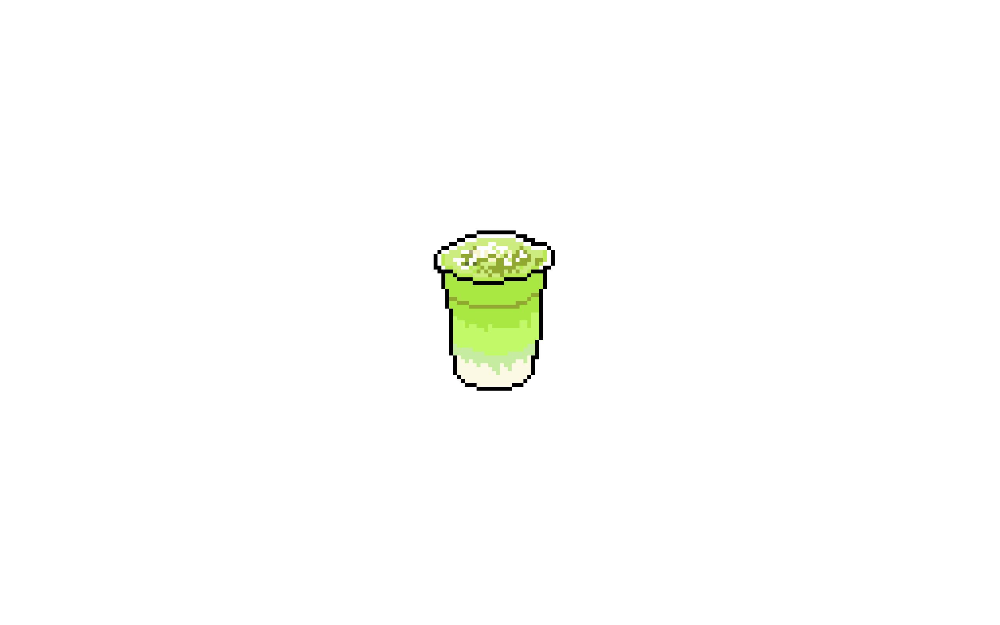
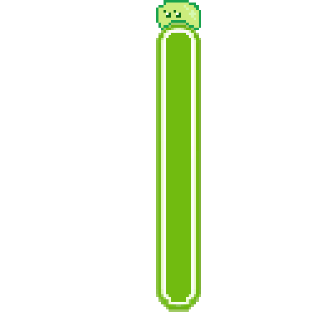
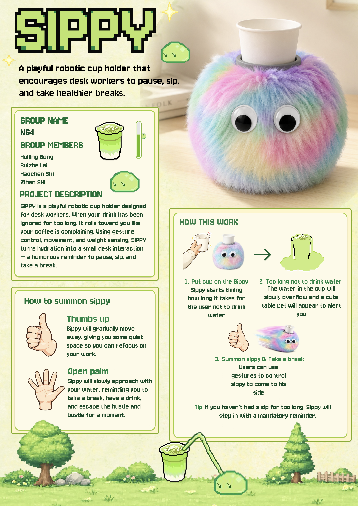

PRODUCT DESIGN · INFO90003
智能桌面杯托机器人 — 用"有意设计的干扰"鼓励健康习惯
一款鼓励健康工作习惯的交互式智能杯托，通过实体机器人形态而非屏幕弹窗来提醒用户适时休息和补水。整合重量感应、手势识别和自主移动能力——当用户将水杯放在机器人上后，机器人会在预设时间后主动靠近用户，配合渐进式动画提醒，迫使用户起身拿起杯子喝水。
用户评测中 65% 的参与者认为 SIPPY 的物理移动比纯屏幕提醒更不容易被忽略，90% 给出 4-5 分（满分5分）的高辨识度评价。
从小角落动画到全屏遮挡，层层递进地打破用户的持续工作模式——既不过于突兀，又确保最终被注意到。
用户可用手势赶走机器人以专注于手头工作，但机器人会在预设时间后自动返回——在自主性和坚持提醒之间取得平衡。
ESP32 主控 + 称重传感器（10kg load cell）+ MediaPipe 手势识别 + Unity 动画 + BLE 蓝牙通信，软硬件一体化原型。

SIPPY 以 Adafruit Feather ESP32 V2 为主控，通过 load cell 重量传感器 + HX711 放大器实时检测杯子的重量变化与喝水情况。N20 DC 减速电机搭配双电机驱动模块和万向滚球，实现桌面自主移动与平衡。3D 打印外壳包裹激光切割亚克力底盘，内置 3.7V LiPo 电池与 18650 电池供整套系统便携运行。
SIPPY 配备了丰富的桌面宠物动画系统，这些动画增强了机器人的拟人化特征，使用户更容易对机器人产生情感连接，从而提高提醒的接受度。





